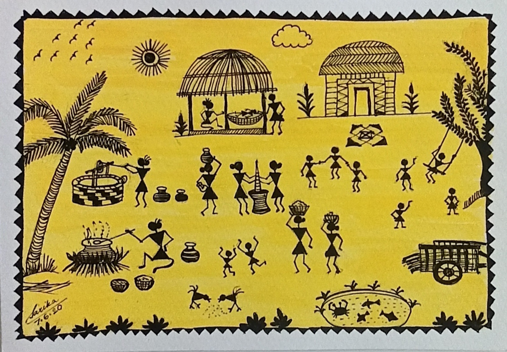

What is Warli Art?
Warli painting is a traditional tribal art form from Maharashtra, India, that reflects the cultural heritage of the Warli tribes. Known for its simple yet intricate designs, Warli art depicts everyday life, nature, and animals using geometric shapes like circles, triangles, and squares. The paintings often feature scenes of communal life, including farming, dancing, hunting, and animals, drawn in white on mud walls. Warli art has gained widespread recognition for its raw beauty and simplicity.
Warli Art Gallery
